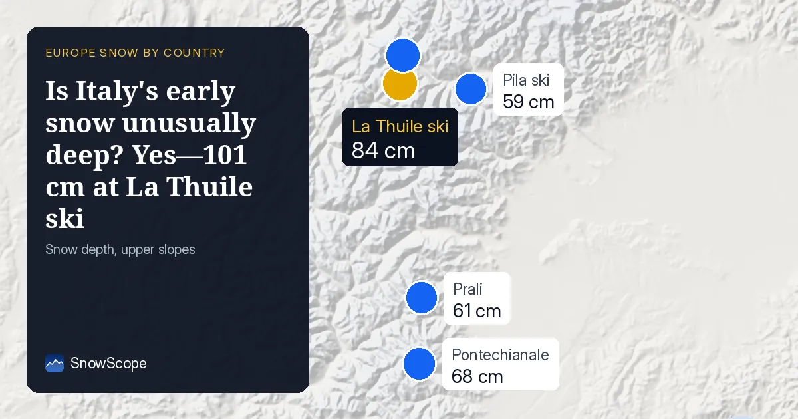
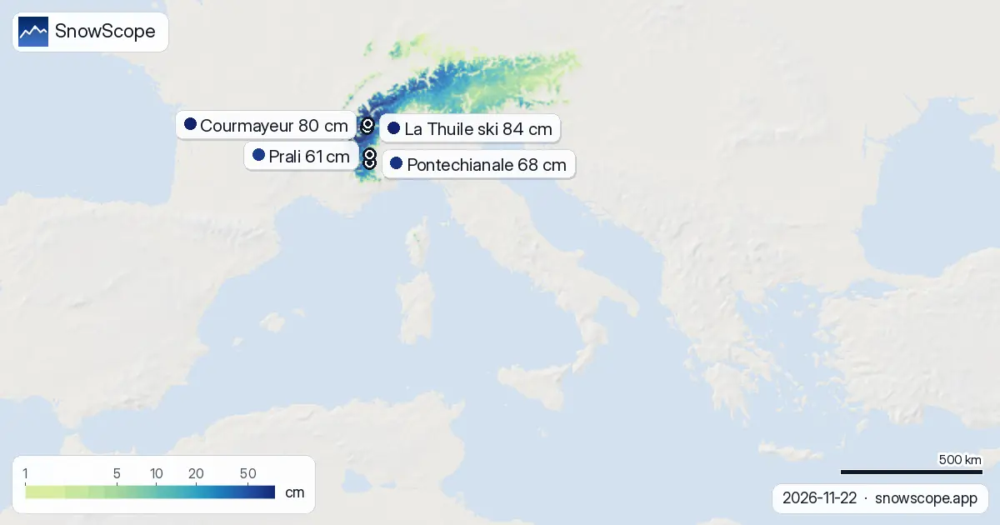
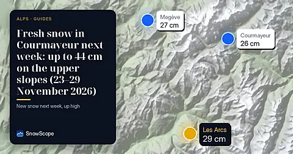

Is Italy's early snow unusually deep? Yes—101 cm at La Thuile ski
Is Italy's snow pack starting deeper than usual this November? Yes. La Thuile ski sits at 101 cm—more than three times the typical depth for late November—making this an exceptionally rare start to the season. The Aosta Valley has captured most of the recent snow, with 242 cm added over three days.
See the live snow forecast for La Thuile ski in the SnowScope appSnow depth, powder alerts and the 3D map, free.
Three times the normal depth in the Alps
La Thuile ski holds 101 cm, a figure we see in only one out of ten past winters by this date. Courmayeur is even deeper at 105 cm. These are outlier numbers for November—the median across five major resorts sits at 161 percent of normal, meaning most are running well ahead of their November averages. The snow map shows Italy now has snow cover on 30,700 km² (up from 23,550 km² yesterday), a jump driven almost entirely by fresh accumulation in the high Alps rather than any unusual warming or melt.
| Resort | Today | Normal for the date | Share of normal |
|---|---|---|---|
| La Thuile ski | 101 cm | 30 cm | 337 % |
| Courmayeur | 105 cm | 27 cm | 389 % |
| Pontechianale | 13 cm | 18 cm | 72 % |
| Prali | 29 cm | 18 cm | 161 % |
| Pila ski | 34 cm | 24 cm | 142 % |

Where the snow fell hardest
The Aosta Valley is the standout: 242 cm in the last 72 hours alone. The Piedmont Alps added 72 cm in the same window. By comparison, the central Apennines received only 10 cm—a typical pattern when Atlantic systems push into the western Alps. This concentration in the high north explains why La Thuile ski and Courmayeur lead the country, while lower resorts like Pontechianale (at 68 cm) have less to work with. The snow line sits at 1,400 m, meaning most lower slopes remain brown.

Snow by height: the band above 2,000 m is well-stocked
SnowScope shows snow depth rises sharply with altitude. Between 1,500 m and 2,000 m, mean depth is 6 cm—patchy and thin. Jump to 2,000–2,500 m and depth reaches 14 cm with 98 percent cover. Above 2,500 m, the average is 32 cm and near-total cover at 99 percent. For skiers, this means you need to climb high to find reliable snow; below 1,500 m, rocks and grass will show through.
What comes next: more snow on 25 November
Another system arrives mid-week. The forecast shows up to 29 cm over the next three days, with 27 cm likely on 25 November. The Aosta Valley and Piedmont will see the most. By contrast, week two (30 November–6 December) is forecast quieter, with only 7 cm expected—a sharp drop. If the system tracks as forecast, resorts above 2,000 m will gain usable depth; lower elevations will remain thin.
How this week ranks
Italy's snow cover has expanded by 7,150 km² in one day—a substantial jump. Compared to seven days ago, the country has added 9,410 km² of snow. The trend line shows volatility: snow cover dipped to 17,790 km² on 17 November, then climbed steadily to today's 30,700 km². The snow map shows real accumulation in the mountains, not a gradual build, so early-season snow is relatively fresh and may be thin in places.
Neighbours: Switzerland and Austria ahead
Across the border, Switzerland shows 71 percent white cover (Italy is 33 percent) with Glacier 3000 at 74 cm. Austria sits at 60 percent cover, led by Stubaier Gletscher at 67 cm. Both countries will see more snow this week—Switzerland up to 49 cm, Austria up to 25 cm. Italy's advantage in absolute depth at high resorts is real, but the regional picture shows the Atlantic systems are spreading across the entire Alpine arc.
Tips for skiers
- Head to La Thuile ski or Courmayeur if you want the deepest snow in Italy right now; both are well above 80 cm at mid-mountain. Plan to ski above 2,000 m where SnowScope shows continuous snow; below 1,500 m, cover is fragmented.
- The 27 cm forecast for 25 November will push depth higher, so if you can ski mid-to-late week the conditions may improve. Early-week snow is usually denser and skis better after a day or two.
- Before going off-piste, check the official avalanche bulletin for the region—fresh snow on steep slopes after such rapid accumulation carries risk. Early-season snow is thin in many areas and rocks may lurk underneath.
- Lower resorts like Pila ski (59 cm) and Pontechianale (68 cm) lag well behind the high peaks. If accessibility or altitude is a constraint, accept that early November skiing in Italy this year is a high-mountain sport.
- Use the SnowScope map to track coverage above 2,000 m in your chosen area; the snow map updates daily and will show how much snow survives melt or wind in the coming days.
About these numbers
Resort snow depths are the deepest snow on the resort's upper slopes on the date shown; they are estimates for an area, not a measurement at one point. Forecasts can change. Always read the official avalanche bulletin before going off-piste.
Cite this report
For research, teaching or the press: the numbers and charts are free to reuse under CC BY 4.0 with this citation.
SnowScope (2026), Is Italy's early snow unusually deep? Yes—101 cm at La Thuile ski, https://snowscope.app/blog/en/2026/11/italy-rare-early-snow-22-november-2026.html, accessed 2026-11-22
SnowScope (Atlas Labs). (2026, November 22). Is Italy's early snow unusually deep? Yes—101 cm at La Thuile ski. SnowScope snow reports. https://snowscope.app/blog/en/2026/11/italy-rare-early-snow-22-november-2026.html
BibTeX
@misc{snowscope2026italyrareearlysnow22nove,
author = {{SnowScope (Atlas Labs)}},
title = {Is Italy's early snow unusually deep? Yes—101 cm at La Thuile ski},
year = {2026},
month = nov,
howpublished = {\url{https://snowscope.app/blog/en/2026/11/italy-rare-early-snow-22-november-2026.html}},
note = {Published 2026-11-22 11:02 UTC; accessed 2026-11-22}
}· CC BY 4.0 · Methods, data and tools →
La Thuile ski: snow and temperature by height, this winter vs last (tools) →
Follow La Thuile ski
Free: a message when fresh snow is coming, and the forecast every morning.
More snow reports

Courmayeur gets 26 cm of snow next week at 2700 m, with a range of 8–44 cm. Best days are 24–26 and 28–29 November. Forecast from 16 November 2026.

From 13 to 19 November 2026 Slovenia got the most snow and kept it; Serbia and Croatia had a deep but short white weekend; Montenegro only on Durmitor; Bulgaria almost none. The ranking, with links to each country report.

164 Italian resorts have snow today. Pfelders leads with 118 cm on upper slopes. Up to 55 cm fell in three days.